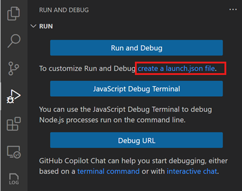
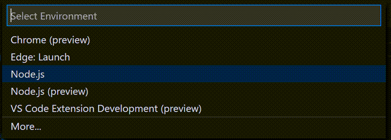
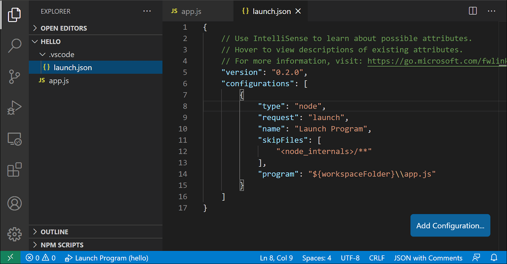
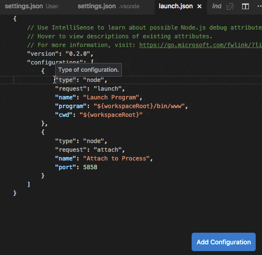
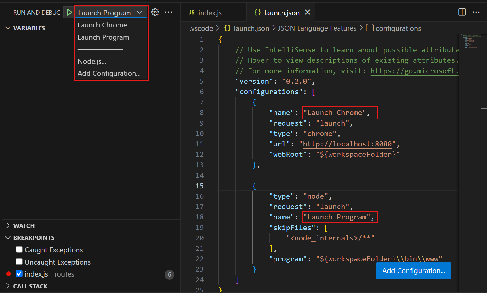
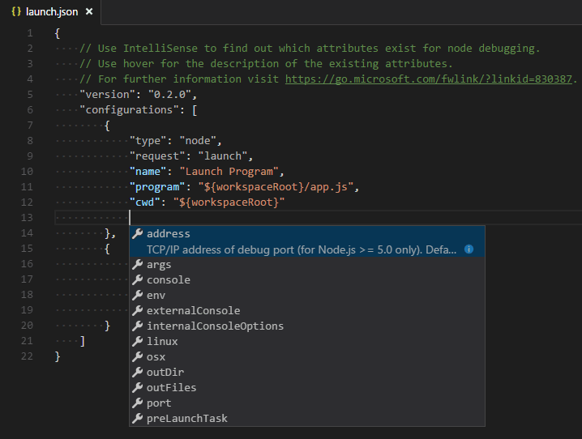

Visual Studio Code 调试配置
对于复杂的调试场景或应用程序，你需要创建一个 launch.json 文件来指定调试器配置。例如，指定应用程序入口点、附加到正在运行的应用程序，或设置环境变量。
要了解有关 VS Code 调试的更多信息，请参阅在 Visual Studio Code 中进行调试。
[!TIP]
VS Code 中的 Copilot 可以帮助你为项目创建启动配置。获取有关使用 Copilot 生成启动配置的更多信息。
启动配置
对于简单的应用程序或调试场景，你无需特定的调试配置即可运行和调试程序。使用 kb(workbench.action.debug.start) 键，VS Code 将尝试运行你当前的活动文件。
但是，对于大多数调试场景，你需要创建一个调试配置（_启动配置_）。例如，指定应用程序入口点、附加到正在运行的应用程序，或设置环境变量。创建启动配置文件也很有益，因为它允许你配置并保存调试设置详细信息与你的项目一起。
VS Code 将调试配置信息存储在一个 launch.json 文件中，该文件位于工作区（项目根文件夹）的 .vscode 文件夹中，或你的用户设置或工作区设置中。
以下代码片段描述了一个用于调试 Node.js 应用程序的示例配置：
{
"version": "0.2.0",
"configurations": [
{
"type": "node",
"request": "launch",
"name": "Launch Program",
"skipFiles": [
"<node_internals>/**"
],
"program": "${workspaceFolder}\\app.js"
}
]
}VS Code 还支持复合启动配置，用于同时启动多个配置。
[!NOTE]
即使没有在 VS Code 中打开文件夹，你也可以调试简单的应用程序，但无法管理启动配置和设置高级调试。
创建调试配置文件
要创建初始的 launch.json 文件：
- 在"运行和调试"视图中选择创建 launch.json 文件。

- VS Code 尝试检测你的调试环境。如果无法检测到，你可以手动选择：

根据所选的调试环境，VS Code 会在 launch.json 文件中创建一个启动器配置。
- 在资源管理器视图（
kb(workbench.view.explorer)）中，请注意 VS Code 创建了一个.vscode文件夹，并将launch.json文件添加到了你的工作区。

现在你可以编辑 launch.json 文件以添加更多配置或修改现有配置。
将配置添加到 launch.json
要将新配置添加到现有的 launch.json，使用以下方法之一：
- 按添加配置按钮，然后选择代码片段以添加预定义的配置。
- 如果你的光标位于 configurations 数组内部，则可以使用 IntelliSense。
- 选择运行 > 添加配置菜单选项。

使用 AI 生成启动配置
借助 VS Code 中的 Copilot，你可以加速为项目创建启动配置的过程。要使用 Copilot 生成启动配置：
- 使用
kb(workbench.action.chat.open)打开聊天视图，或从标题栏的 Copilot 菜单中选择打开聊天。 - 输入
/startDebugging聊天提示以生成调试配置。
或者，你也可以输入自定义提示，例如 _generate a debug config for an express app #codebase_。
如果你的工作区中有不同语言的文件，这可能会很有用。
[!NOTE]
#codebase 聊天变量为 Copilot 提供了项目的上下文，这有助于它生成更准确的响应。- 应用建议的配置，然后开始调试。
使用启动配置开始调试会话
要使用启动配置开始调试会话：
- 使用运行和调试视图中的配置下拉菜单选择名为 Launch Program 的配置。
可用配置列表与 launch.json 文件中的配置匹配。

- 使用
kb(workbench.action.debug.start)开始调试会话，或在运行和调试视图中选择开始调试（播放图标）。
或者，你可以通过命令面板（kb(workbench.action.showCommands)）运行配置，筛选调试：选择并开始调试或输入 'debug ' 并选择要调试的配置。
启动与附加配置
在 VS Code 中，有两种核心调试模式，启动和附加，它们处理两种不同的工作流程和开发人员群体。根据你的工作流程，了解哪种类型的配置适合你的项目可能会令人困惑。
如果你来自浏览器开发者工具背景，你可能不习惯"从工具启动"，因为你的浏览器实例已经打开。当你打开 DevTools 时，你只是将 DevTools 附加到你打开的浏览器标签页上。另一方面，如果你来自服务器或桌面背景，让你的编辑器为你启动进程是很正常的，你的编辑器会自动将其调试器附加到新启动的进程上。
解释启动和附加之间区别的最佳方式是，将启动配置视为一个配方，用于在 VS Code 附加到应用程序_之前_如何以调试模式启动你的应用程序，而附加配置则是一个配方，用于如何将 VS Code 的调试器连接到一个_已经_运行的应用程序或进程。
VS Code 调试器通常支持以调试模式启动程序或以调试模式附加到已在运行的程序。根据请求的类型（attach 或 launch），需要不同的属性，VS Code 的 launch.json 验证和建议应该对此有所帮助。
Launch.json 属性
有许多 launch.json 属性可帮助支持不同的调试器和调试场景。一旦你为 type 属性指定了值，就可以使用 IntelliSense（kb(editor.action.triggerSuggest)）查看可用属性列表。启动配置中可用的属性因调试器而异。

一个调试器可用的属性不会自动适用于其他调试器。如果你在启动配置中看到红色波浪线，请将鼠标悬停在其上以了解问题所在，并在启动调试会话之前尝试修复它们。
以下属性对于每个启动配置是必需的：
type- 用于此启动配置的调试器类型。每个已安装的调试扩展都会引入一个类型：例如，内置 Node 调试器的node，或 PHP 和 Go 扩展的php和go。request- 此启动配置的请求类型。目前支持setting(launch)和attach。name- 在调试启动配置下拉菜单中显示的友好名称。
以下是一些可用于所有启动配置的可选属性：
presentation- 使用presentation对象中的order、group和hidden属性，你可以在调试配置下拉菜单和调试快速选择中对配置和复合配置进行排序、分组和隐藏。你也可以在特定平台部分（windows、linux、osx）中设置presentation，以按操作系统控制可见性。preLaunchTask- 要在调试会话开始之前启动任务，请将此属性设置为 tasks.json（位于工作区的.vscode文件夹中）中指定的任务标签。或者，可以将其设置为${defaultBuildTask}以使用默认构建任务。postDebugTask- 要在调试会话结束时启动任务，请将此属性设置为 tasks.json（位于工作区的.vscode文件夹中）中指定的任务名称。internalConsoleOptions- 此属性控制调试会话期间调试控制台面板的可见性。debugServer- 仅适用于调试扩展作者：此属性允许你连接到指定端口，而不是启动调试适配器。serverReadyAction- 如果你希望在程序调试输出特定消息到调试控制台或集成终端时自动在 Web 浏览器中打开一个 URL。有关详细信息，请参阅下面的在调试服务器程序时自动打开 URI 部分。
许多调试器支持以下一些属性：
program- 启动调试器时要运行的可执行文件或文件args- 传递给要调试的程序的参数env- 环境变量（值null可用于"取消定义"变量）envFile- 包含环境变量的 dotenv 文件路径cwd- 用于查找依赖项和其他文件的当前工作目录port- 附加到正在运行的进程时的端口stopOnEntry- 程序启动时立即中断console- 要使用的控制台类型，例如internalConsole、integratedTerminal或externalTerminal变量替换
VS Code 将常用路径和其他值作为变量提供，并支持在 launch.json 中的字符串内进行变量替换。这意味着你不必在调试配置中使用绝对路径。例如，${workspaceFolder} 表示工作区文件夹的根路径，${file} 表示活动编辑器中打开的文件，${env:Name} 表示环境变量 'Name'。
你可以在变量参考中查看预定义变量的完整列表，或在 launch.json 字符串属性内部调用 IntelliSense。
{
"type": "node",
"request": "launch",
"name": "Launch Program",
"program": "${workspaceFolder}/app.js",
"cwd": "${workspaceFolder}",
"args": [ "${env:USERNAME}" ]
}特定平台属性
VS Code 支持定义依赖于运行调试器的操作系统的调试配置设置（例如，要传递给程序的参数）。为此，在 launch.json 文件中放置一个特定平台字面量，并在该字面量内指定相应的属性。
以下示例展示了如何在 Windows 上以不同方式传递 "args" 给程序：
{
"version": "0.2.0",
"configurations": [
{
"type": "node",
"request": "launch",
"name": "Launch Program",
"program": "${workspaceFolder}/node_modules/gulp/bin/gulpfile.js",
"args": ["myFolder/path/app.js"],
"windows": {
"args": ["myFolder\\path\\app.js"]
}
}
]
}有效的操作系统属性是 "windows" 用于 Windows，"linux" 用于 Linux，"osx" 用于 macOS。在操作系统特定范围中定义的属性会覆盖在全局范围中定义的属性。
type 属性不能放在特定平台部分内，因为 type 在远程调试场景中间接决定了平台，这将导致循环依赖。
在以下示例中，调试程序始终在入口处停止，但在 macOS 上除外：
{
"version": "0.2.0",
"configurations": [
{
"type": "node",
"request": "launch",
"name": "Launch Program",
"program": "${workspaceFolder}/node_modules/gulp/bin/gulpfile.js",
"stopOnEntry": true,
"osx": {
"stopOnEntry": false
}
}
]
}你也可以使用特定平台部分来控制 presentation 属性。在以下示例中，該配置在 macOS 上的调试下拉菜单中被隐藏：
{
"version": "0.2.0",
"configurations": [
{
"type": "node",
"request": "launch",
"name": "Launch Program",
"program": "${workspaceFolder}/app.js",
"osx": {
"presentation": {
"hidden": true
}
}
}
]
}全局启动配置
你可以定义在所有工作区中都可用的启动配置。要指定全局启动配置，请在你的 setting(launch) 用户设置中添加一个启动配置对象。此 launch 配置随后会在你的所有工作区中共享。例如：
"launch": {
"version": "0.2.0",
"configurations": [{
"type": "node",
"request": "launch",
"name": "Launch Program",
"program": "${file}"
}]
}重定向与调试目标之间的输入/输出
重定向输入/输出是特定于调试器或运行时的，因此 VS Code 没有适用于所有调试器的内置解决方案。
以下是你可能需要考虑的两种方法：
- 在终端或命令提示符中手动启动要调试的程序（"调试目标"），并根据需要重定向输入/输出。确保传递适当的命令行选项给调试目标，以便调试器可以附加到它。创建并运行一个附加到调试目标的"附加"调试配置。
- 如果你使用的调试器扩展可以在 VS Code 的集成终端（或外部终端）中运行调试目标，你可以尝试将 shell 重定向语法（例如，"<" 或 ">"）作为参数传递。
以下是一个 launch.json 配置示例：
{
"name": "launch program that reads a file from stdin",
"type": "node",
"request": "launch",
"program": "program.js",
"console": "integratedTerminal",
"args": [
"<",
"in.txt"
]
} 这种方法要求 < 语法通过调试器扩展传递，并最终在集成终端中保持不变。
复合启动配置
另一种启动多个调试会话的方法是使用_复合_启动配置。你可以在 launch.json 文件的 compounds 属性中定义复合启动配置。
使用 configurations 属性列出应并行启动的两个或多个启动配置的名称。
可选地，指定一个 preLaunchTask 任务，该任务在各个调试会话开始之前运行。布尔标志 stopAll 控制手动终止一个会话是否会停止所有复合会话。
{
"version": "0.2.0",
"configurations": [
{
"type": "node",
"request": "launch",
"name": "Server",
"program": "${workspaceFolder}/server.js"
},
{
"type": "node",
"request": "launch",
"name": "Client",
"program": "${workspaceFolder}/client.js"
}
],
"compounds": [
{
"name": "Server/Client",
"configurations": ["Server", "Client"],
"preLaunchTask": "${defaultBuildTask}",
"stopAll": true
}
]
}复合启动配置也会显示在启动配置下拉菜单中。
在调试服务器程序时自动打开 URI
开发 Web 程序通常需要在 Web 浏览器中打开特定的 URL，以便在调试器中访问服务器代码。VS Code 有一个内置功能"serverReadyAction"来自动完成此任务。
以下是一个简单的 Node.js Express 应用程序示例：
var express = require('express');
var app = express();
app.get('/', function (req, res) {
res.send('Hello World!')
});
app.listen(3000, function () {
console.log('Example app listening on port 3000!')
});此应用程序首先为 "/" URL 安装一个 "Hello World" 处理程序，然后开始监听端口 3000 上的 HTTP 连接。该端口在调试控制台中公布，通常，开发人员现在会在其浏览器应用程序中输入 http://localhost:3000。
serverReadyAction 功能可以将结构化属性 serverReadyAction 添加到任何启动配置中，并选择要执行的"操作"：
{
"type": "node",
"request": "launch",
"name": "Launch Program",
"program": "${workspaceFolder}/app.js",
"serverReadyAction": {
"pattern": "listening on port ([0-9]+)",
"uriFormat": "http://localhost:%s",
"action": "openExternally"
}
}这里 pattern 属性描述了用于匹配程序输出字符串中公布端口的正则表达式。端口号的模式被放在括号中，以便作为正则表达式捕获组使用。在此示例中，我们只提取端口号，但也可以提取完整的 URI。
uriFormat 属性描述了如何将端口号转换为 URI。第一个 %s 被匹配模式的第一个捕获组替换。
然后，生成的 URI 会在 VS Code 外部（"externally"）使用为该 URI 方案配置的标准应用程序打开。
通过 Microsoft Edge 或 Chrome 触发调试
或者，action 可以设置为 debugWithEdge 或 debugWithChrome。在此模式下，可以添加一个 webRoot 属性，该属性会传递给 Chrome 或 Microsoft Edge 调试会话。
为了简化，大多数属性是可选的，我们使用以下回退值：
- pattern：
"listening on.* (https?://\\S+|[0-9]+)"，匹配常用的消息"listening on port 3000"或"Now listening on: https://localhost:5001"。 - uriFormat：
"http://localhost:%s" - webRoot：
"${workspaceFolder}"触发任意启动配置
在某些情况下，你可能需要为浏览器调试会话配置更多选项，或使用完全不同的调试器。你可以通过将 action 设置为 startDebugging，并设置 name 属性为当 pattern 匹配时要启动的启动配置的名称来实现。
命名的启动配置必须与带有 serverReadyAction 的配置文件位于同一文件或文件夹中。
以下是 serverReadyAction 功能的实际操作：
后续步骤
- 任务 - 描述如何使用 Gulp、Grunt 和 Jake 运行任务以及如何显示错误和警告。
- 变量参考 - 描述 VS Code 中可用的变量。
常见问题
我在"运行和调试"视图下拉菜单中看不到任何启动配置。出了什么问题？
最常见的问题是你没有设置 launch.json，或者该文件中存在语法错误。或者，你可能需要打开一个文件夹，因为无文件夹调试不支持启动配置。